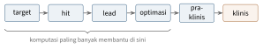
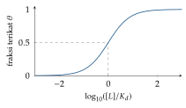

Bab 23
Molekul, Obat, dan Data Medis
Kuliah AI in life sciences saya ikuti pada musim panas 2025. Materinya luas: penemuan obat dan representasi molekul, QSAR dan virtual screening, geometric deep learning untuk molekul, model multimodal, model generatif, data medis, sampai reaksi kimia dan perencanaan sintesis. Banyak metode yang dibahas lahir di Linz sendiri, dari DeepTox sampai jaringan Hopfield modern untuk kimia, sehingga kuliahnya banyak memperlihatkan hasil riset dari kelompok-kelompok di kampus yang sama.
Menemukan obat baru memakan waktu lebih dari satu dekade dan biaya yang besar sekali, dan sebagian besar kandidat gagal di tengah jalan. Machine learning tidak bisa menggantikan uji klinis, tetapi bisa membuat langkah-langkah awal jauh lebih murah, misalnya dengan menyaring jutaan molekul di komputer sebelum satu pun disintesis, dan bisa membantu membaca data pasien yang menumpuk di rumah sakit.
Jalan panjang sebuah obat
Pipeline penemuan obat dimulai dengan memilih target biologis, biasanya sebuah protein yang terlibat dalam penyakit (Gambar 23.1). Lalu dicari hit, senyawa yang memengaruhi target itu dalam percobaan. Hit yang menjanjikan dikembangkan menjadi lead, dan lead dioptimalkan sifat-sifatnya: kekuatan, selektivitas terhadap target yang benar, keamanan, dan kemampuan sampai ke tempat kerjanya di tubuh. Setelah itu datang uji praklinis pada sel dan hewan, lalu uji klinis pada manusia dalam beberapa fase, dari keamanan pada sukarelawan sehat sampai efektivitas pada ribuan pasien. Setiap tahap menyaring sebagian besar kandidat, sehingga dari ribuan senyawa awal, hanya segelintir yang sampai ke apotek. Kegagalan di tahap akhir paling mahal, sehingga setiap metode yang bisa memprediksi kegagalan lebih awal bernilai besar.

Bagaimana mesin melihat molekul
Molekul organik kecil adalah atom-atom yang dihubungkan ikatan kimia. Kuliah mengulang kimia dasar yang dibutuhkan: unsur yang paling banyak di tubuh manusia, ikatan kovalen dan gaya antarmolekul, konformasi tiga dimensi, dan kiralitas, ketika dua molekul adalah bayangan cermin satu sama lain dan bisa punya efek biologis yang berbeda.
Representasi paling alami adalah graf: atom sebagai simpul, ikatan
sebagai sisi, masing-masing dengan atribut seperti jenis unsur, muatan,
dan orde ikatan. Untuk disimpan dan dicari di basis data, graf ini
ditulis sebagai string. SMILES (Weininger 1988) berjalan menyusuri
graf dan mencatat atom yang dilewati: etanol ditulis CCO,
benzena c1ccccc1, dengan angka yang menandai titik
pembukaan dan penutupan cincin. Satu molekul bisa punya banyak SMILES
yang sah, tergantung dari atom mana penyusuran dimulai, sehingga
dibutuhkan bentuk kanonik untuk membandingkan. SELFIES dirancang agar
setiap string yang mungkin selalu mewakili molekul yang sah, sifat yang
berguna untuk model generatif. InChI dan InChIKey memberi pengenal unik
yang bisa dipakai sebagai kunci basis data.
Untuk machine learning klasik, molekul diubah menjadi vektor fitur. Molecular descriptor adalah besaran yang bisa dihitung, seperti berat molekul, jumlah donor ikatan hidrogen, atau koefisien partisi oktanol–air (\(\log P\)) yang mengukur seberapa “berminyak” sebuah molekul. Molecular fingerprint adalah vektor biner panjang yang menandai keberadaan pola-pola substruktur. Extended connectivity fingerprint (Rogers dan Hahn 2010) dibangun dengan cara yang sangat mirip uji Weisfeiler–Leman di Bab 13. Setiap atom mulai dengan pengenal dari sifat-sifatnya sendiri. Di setiap iterasi, pengenal atom diperbarui dengan meng-hash pengenalnya bersama pengenal tetangga-tetangganya, sehingga setelah dua atau tiga iterasi, setiap pengenal mewakili lingkungan berjari-jari dua atau tiga ikatan. Semua pengenal kemudian dilipat ke dalam vektor berukuran tetap, misalnya 2048 bit. ECFP adalah message passing tanpa parameter yang dipelajari.
Kemiripan dua molekul diukur dengan koefisien Tanimoto pada fingerprint-nya, rasio irisan terhadap gabungan, \[T(A,B)=\frac{|A\cap B|}{|A\cup B|}=\frac{c}{a+b-c},\] dengan \(a\) dan \(b\) jumlah bit yang menyala pada masing-masing fingerprint dan \(c\) jumlah bit yang menyala pada keduanya. Bentuk kedua didapat karena \(|A\cup B|=|A|+|B|-|A\cap B|\): bit yang ada di keduanya terhitung dua kali dalam \(a+b\), sehingga harus dikurangi sekali. Kalau molekul \(A\) punya 20 bit menyala, \(B\) punya 18, dan 12 di antaranya sama, kemiripannya \(12/(20+18-12)=12/26\approx0{,}46\). Dalam praktik, nilai di atas sekitar \(0{,}7\) untuk ECFP sering dianggap tanda dua molekul cukup mirip untuk kemungkinan punya aktivitas serupa, tetapi ambang ini bergantung pada jenis fingerprint. Ruang molekul mirip obat yang mungkin dibuat diperkirakan amat besar, jauh melebihi jumlah molekul yang pernah disintesis manusia, sehingga pencarian di ruang ini adalah masalah eksplorasi yang sesungguhnya.
Aktivitas biologis
Seberapa kuat sebuah senyawa memengaruhi targetnya diukur dalam percobaan yang disebut assay, di dalam tabung tanpa sel atau dengan sel hidup. Pada konsentrasi yang semakin tinggi, efeknya biasanya naik mengikuti kurva berbentuk S. Bentuk ini bisa diturunkan dari kesetimbangan pengikatan yang paling sederhana. Misalkan reseptor \(R\) dan ligan \(L\) membentuk kompleks \(RL\) dengan konstanta disosiasi \[K_d=\frac{[R][L]}{[RL]}.\] Jumlah reseptor total tetap, \([R]_{\mathrm{tot}}=[R]+[RL]\). Fraksi reseptor yang terikat adalah \(\theta=[RL]/[R]_{\mathrm{tot}}\). Dari definisi \(K_d\), \([R]=K_d[RL]/[L]\), sehingga \[\theta=\frac{[RL]}{K_d[RL]/[L]+[RL]}=\frac{[L]}{K_d+[L]}.\] Ketika konsentrasi ligan sama dengan \(K_d\), tepat separuh reseptor terikat. Pada skala logaritmik konsentrasi, fungsi ini menjadi kurva S yang terkenal (Gambar 23.2). Untuk penghambatan, konsentrasi yang memberi separuh efek maksimum disebut IC\(_{50}\), dan untuk pemodelan biasanya dipakai \(\mathrm{pIC}_{50}=-\log_{10}(\mathrm{IC}_{50}\ \text{dalam molar})\). Senyawa dengan IC\(_{50}\) 100 nanomolar punya pIC\(_{50}\) sebesar 7, dan setiap kenaikan satu satuan berarti senyawa sepuluh kali lebih kuat. Skala logaritmik ini membuat target regresi lebih mendekati distribusi normal, sesuai asumsi noise Gauss dari Bab 1.

Obat tidak cukup kuat, ia juga harus sampai ke tempatnya. Sifat ADME, yaitu penyerapan, distribusi, metabolisme, dan ekskresi, menentukan hal ini. Aturan lima Lipinski (Lipinski dkk. 1997) adalah heuristik terkenal untuk obat yang diminum: berat molekul tidak lebih dari 500 dalton, \(\log P\) tidak lebih dari 5, paling banyak 5 donor dan 10 akseptor ikatan hidrogen. Aturan ini dirumuskan dari pengamatan pada obat-obat yang sudah berhasil, bukan dari hukum fisika, dan banyak pengecualiannya.
Data aktivitas dikumpulkan dalam basis data publik seperti ChEMBL (Gaulton dkk. 2012). Kalau disusun sebagai matriks senyawa terhadap target, matriks ini jarang sekali: sebagian besar pasangan tidak pernah diukur. Datanya juga tidak seimbang, karena senyawa aktif jauh lebih sedikit dari yang tidak aktif, dan berisik, karena laboratorium berbeda memberi angka berbeda untuk pengukuran yang sama.
QSAR dan virtual screening
Quantitative structure–activity relationship (QSAR) adalah nama lama untuk apa yang kini kita sebut supervised learning pada molekul: memprediksi aktivitas dari struktur. Kuliah mencatat bahwa gagasannya sudah berumur lebih dari setengah abad, dimulai dari regresi linear pada beberapa deskriptor. Virtual screening memakai model seperti ini, atau sekadar pencarian kemiripan, untuk menyaring pustaka berisi jutaan sampai miliaran senyawa dan memilih segelintir yang layak diuji di laboratorium. Pendekatan berbasis ligan hanya memakai senyawa aktif yang sudah diketahui. Pendekatan berbasis struktur memakai bentuk tiga dimensi protein target untuk menilai seberapa baik sebuah senyawa bisa menempel. Sebelum dan sesudahnya ada penyaringan: senyawa dengan substruktur yang dikenal bermasalah dibuang, dan pengelompokan dipakai supaya senyawa yang dipilih beragam, bukan seratus varian dari satu kerangka.
Kuliah memberi penekanan besar pada cara membagi data. Ahli kimia bekerja dalam seri senyawa, yaitu banyak varian kecil dari satu kerangka yang sama, yang sering dirangkum sebagai kerangka Murcko. Kalau data dibagi acak, varian dari seri yang sama masuk ke data latih dan data uji sekaligus, dan model tampak hebat karena pada dasarnya hanya mengenali saudara dekat. Pembagian berdasarkan kerangka atau berdasarkan klaster memaksa model diuji pada kimia yang benar-benar baru, dan skornya biasanya turun drastis. Bias ini disebut compound series bias. Pada model multitask, kebocoran bisa terjadi lewat tugas lain yang mengukur senyawa yang sama. Validasi silang bersarang dipakai agar pemilihan hyperparameter tidak ikut membocorkan data uji: lingkar dalam memilih hyperparameter, lingkar luar mengukur kinerja.
Metrik evaluasi juga harus dipilih dengan hati-hati. Untuk data yang tidak seimbang, luas di bawah kurva ROC bisa tampak bagus walau model praktis tidak berguna, karena kurva ROC tidak peka terhadap banyaknya negatif palsu. Luas di bawah kurva presisi–recall lebih jujur dalam situasi ini. Misalkan dari 10 000 senyawa hanya 100 yang aktif, dan model menempatkan 50 senyawa aktif di antara 500 senyawa teratasnya. Recall pada titik itu 50 persen, tetapi presisinya hanya 10 persen, sembilan dari sepuluh senyawa yang dipilih untuk diuji ternyata tidak aktif. Untuk virtual screening, yang dipedulikan justru presisi di daftar teratas, karena hanya daftar itulah yang akan diuji di laboratorium.
DeepTox (Mayr dkk. 2016), dari kelompok di Linz, menunjukkan kekuatan jaringan saraf multitask untuk memprediksi toksisitas. Banyak tugas toksisitas berbagi mekanisme, sehingga satu jaringan yang belajar semuanya bersama-sama membangun representasi yang lebih baik daripada model terpisah untuk setiap tugas.
Target, sinergi, dan pasangan protein–senyawa
Kuliah membedakan dua arah pertanyaan. Target prediction bertanya: untuk senyawa ini, target mana yang mungkin dipengaruhinya? Pertanyaan ini penting untuk memperkirakan efek samping. Target identification bertanya kebalikannya: senyawa ini menghasilkan efek yang menarik pada sel, protein apa yang sebenarnya ia ikat? Model proteochemometrics menjawab keduanya dengan memasukkan representasi senyawa dan representasi protein sekaligus, sehingga bisa memprediksi pasangan yang belum pernah diukur.
Obat juga sering diberikan berpasangan, terutama dalam terapi kanker. Dua obat bersinergi kalau efek gabungannya lebih besar dari yang diharapkan dari masing-masing. “Yang diharapkan” perlu didefinisikan, dan model aditif Loewe yang dibahas kuliah memakai dosis ekuivalen. Kalau obat 1 sendirian butuh dosis \(D_1\) dan obat 2 sendirian butuh \(D_2\) untuk mencapai efek tertentu, kombinasi dosis \(d_1\) dan \(d_2\) yang mencapai efek yang sama dinilai dengan indeks \[\mathrm{CI}=\frac{d_1}{D_1}+\frac{d_2}{D_2}.\] Indeks satu berarti aditif, lebih kecil dari satu berarti sinergis. Kalau separuh dosis tunggal masing-masing sudah mencukupi, \(\mathrm{CI}=0{,}5+0{,}5=1\): aditif. Kalau seperempat masing-masing sudah cukup, \(\mathrm{CI}=0{,}5\): sinergis. Model deep learning dilatih untuk memprediksi sinergi dari struktur kedua obat dan profil sel kanker, dan kuliah mengingatkan kebocoran khasnya: pasangan \((A,B)\) di data latih dan \((B,A)\) di data uji adalah pasangan yang sama.
Graf dan geometri molekul
Bagian lanjut kuliah membawa geometric deep learning (Bab 13) ke kimia. ChemProp (Yang dkk. 2019) menjalankan message passing langsung pada graf molekul, dengan pesan yang dikirim di sepanjang ikatan, lalu sebuah fungsi readout merangkum semua atom menjadi satu vektor molekul, misalnya dengan menjumlahkan, sebelum masuk ke jaringan prediksi. Fiturnya dipelajari, bukan dirancang seperti pada ECFP.
Untuk sifat yang bergantung pada bentuk tiga dimensi, jaringan harus menghormati simetri ruang: memutar atau menggeser molekul tidak boleh mengubah energinya. EGNN (Satorras, Hoogeboom, dan Welling 2021) mencapainya dengan memperbarui fitur simpul \(\boldsymbol{h}_i\) dan koordinat \(\boldsymbol{x}_i\) hanya lewat besaran yang invarian atau ekuivarian: \[\boldsymbol m_{ij}=\phi_e\big(\boldsymbol{h}_i,\boldsymbol{h}_j,\|\boldsymbol{x}_i-\boldsymbol{x}_j\|^2\big),\qquad \boldsymbol{x}_i'=\boldsymbol{x}_i+C\sum_{j\ne i}(\boldsymbol{x}_i-\boldsymbol{x}_j)\,\phi_x(\boldsymbol m_{ij}),\qquad \boldsymbol{h}_i'=\phi_h\Big(\boldsymbol{h}_i,\sum_j\boldsymbol m_{ij}\Big).\] Pesan hanya melihat jarak kuadrat, yang tidak berubah ketika molekul diputar, sehingga fitur simpulnya invarian. Koordinat diperbarui dengan menjumlahkan vektor selisih \(\boldsymbol{x}_i-\boldsymbol{x}_j\) yang dikalikan bilangan, sehingga kalau semua koordinat diputar, pembaruannya ikut berputar. Bukti ekuivariansinya hanya beberapa baris, dan kuliah memperlihatkannya sebagai contoh bagaimana simetri dibangun ke dalam arsitektur alih-alih dipelajari dari data.
Belajar dari banyak modalitas dan sedikit contoh
Data ilmu hayati datang dalam banyak bentuk: struktur molekul, deskripsi teks sebuah assay, gambar mikroskop sel, urutan protein. Kuliah membahas cara menghubungkannya dengan contrastive learning. Gagasan dasarnya berasal dari CLIP (Radford dkk. 2021), yang melatih encoder gambar dan encoder teks agar pasangan yang benar berdekatan dan pasangan yang salah berjauhan di ruang embedding bersama.
Loss-nya bisa diturunkan sebagai masalah klasifikasi. Dalam satu batch ada \(N\) pasangan. Untuk molekul ke-\(i\), kita hitung kemiripan kosinus \(s_{ij}\) dengan setiap deskripsi \(j\) dalam batch, lalu memperlakukan pertanyaan “deskripsi mana yang cocok dengan molekul ini?” sebagai klasifikasi \(N\) kelas dengan softmax. Cross-entropy untuk jawaban yang benar memberi \[\mathcal{L}_i=-\log\frac{\exp(s_{ii}/\tau)}{\sum_{j=1}^N\exp(s_{ij}/\tau)},\] dengan \(\tau\) suhu yang mengatur ketajaman softmax. Loss ini dihitung ke dua arah, dari molekul ke teks dan dari teks ke molekul, lalu dirata-ratakan. Sebagai contoh, misalkan batch berisi tiga pasangan, \(\tau=1\), dan untuk molekul pertama kemiripannya \((0{,}9;\ 0{,}2;\ 0{,}1)\). Bobot softmax untuk pasangan yang benar adalah \(e^{0{,}9}/(e^{0{,}9}+e^{0{,}2}+e^{0{,}1})\approx2{,}46/(2{,}46+1{,}22+1{,}11)\approx0{,}51\), dan loss-nya \(-\ln0{,}51\approx0{,}67\). Menurunkan suhu menjadi \(0{,}1\) membuat bobot itu mendekati satu.
Kelompok di Linz menemukan kelemahan halus pada loss ini. Fürst dkk. (2021) mengamati bahwa CLIP cenderung bertumpu pada satu atau dua fitur yang paling membedakan dan mengabaikan fitur relevan lainnya, gejala explaining away yang sudah kita kenal dari Bab 14. Usulan mereka, CLOOB, punya dua bahan. Embedding diperkaya dengan jaringan Hopfield modern (Bab 9), yang mengambil kembali pola-pola tersimpan yang mirip sehingga struktur kovarians antar fitur ikut terbawa. Loss-nya diganti dengan InfoLOOB, yang mengeluarkan pasangan positif dari penyebut: \(-\log\big(e^{s_{ii}/\tau}/\sum_{j\ne i}e^{s_{ij}/\tau}\big)\). Pada InfoNCE, rasio di dalam logaritma tidak bisa melebihi satu, sehingga begitu pasangan positif sudah jauh mendominasi, gradiennya hampir hilang dan model berhenti belajar. Dengan kemiripan \((0{,}9;\ 0{,}2;\ 0{,}1)\) dan \(\tau=1\) seperti di atas, rasio InfoNCE adalah \(0{,}51\), sedangkan rasio InfoLOOB \(2{,}46/(1{,}22+1{,}11)\approx1{,}06\), dan rasio ini terus bisa naik tanpa batas. Gagasan yang sama dibawa ke biologi oleh CLOOME (Sanchez-Fernandez dkk. 2023), yang menempatkan gambar mikroskop sel yang diberi senyawa dan struktur kimia senyawa itu dalam satu ruang embedding. Dengan sebuah struktur kimia sebagai kueri, sistem ini menemukan gambar sel yang benar dari sekitar dua ribu kandidat dengan akurasi teratas lebih dari tujuh puluh kali tebakan acak, sehingga basis data citra biologi bisa “ditanya” dengan rumus kimia.
CLAMP (Seidl dkk. 2023) memakai gagasan ini untuk menghubungkan molekul dengan deskripsi teks assay, sehingga model bisa memprediksi aktivitas untuk assay baru hanya dari deskripsinya, tanpa satu pun contoh berlabel. Itulah zero-shot learning. Varian lain menghubungkan molekul dengan gambar mikroskop sel yang diberi senyawa itu, atau dengan kantong pengikatan protein. Ketika hanya ada segelintir contoh berlabel, pendekatan few-shot memakai jaringan Hopfield modern (Bab 9) untuk membandingkan molekul kueri dengan contoh-contoh yang ada dan dengan konteks dari molekul lain. Active learning memilih molekul berikutnya yang paling informatif untuk diukur, biasanya yang prediksinya paling tidak pasti, sehingga setiap percobaan laboratorium yang mahal memberi informasi sebanyak mungkin.
Kadang labelnya hanya ada untuk sekumpulan objek, bukan untuk masing-masing. Campuran senyawa diuji bersama, atau satu pasien punya ribuan sel tetapi hanya satu diagnosis. Multiple instance learning menangani situasi ini: setiap contoh adalah “kantong” berisi banyak instans, dan label kantong positif kalau setidaknya satu instans positif. Fraksi instans yang benar-benar membawa sinyal disebut witness rate, dan kalau ia kecil, masalahnya sulit. Pooling dengan attention, yang juga bisa dibaca sebagai jaringan Hopfield, belajar menimbang instans mana yang paling menentukan.
Model bahasa besar juga mulai dipakai di kimia. Mereka fasih menjawab pertanyaan tentang reaksi dan sifat zat, tetapi kuliah menunjukkan contoh di mana mereka kesulitan memahami struktur molekul yang ditulis sebagai SMILES, sehingga peran mereka untuk sementara lebih sebagai asisten daripada pengganti model khusus.
Merancang molekul baru
Model generatif membalik arah QSAR: bukan dari struktur ke sifat, melainkan dari sifat yang diinginkan ke struktur. Kuliah membedakan dua paradigma. Distribution learning belajar membangkitkan molekul yang mirip dengan himpunan latih. Goal-directed learning mengarahkan model ke molekul dengan skor setinggi mungkin. Pendekatan paling sederhana memperlakukan SMILES sebagai teks dan melatih LSTM untuk menebak karakter berikutnya (Segler dkk. 2018). Setelah dilatih pada jutaan molekul, model ini menghasilkan string baru yang sebagian besar adalah molekul sah. Untuk mengarahkannya, model disetel dengan reinforcement learning (Bab 16), dengan model QSAR sebagai fungsi ganjaran, atau dilatih ulang pada molekul-molekul terbaik. VAE (Gómez-Bombarelli dkk. 2018) memetakan molekul ke ruang laten kontinu, sehingga optimasi bisa dilakukan dengan gradien di ruang itu. Pembangkitan bersyarat memberi sifat yang diinginkan sebagai input sejak awal.
Ada beberapa jebakan. Model yang dioptimasi terhadap satu skor cenderung menemukan celah dalam skor itu, menghasilkan molekul yang secara angka sempurna tetapi aneh secara kimia, sehingga biasanya beberapa tujuan dioptimalkan bersama. Mode collapse membuat model terus menghasilkan variasi kecil dari satu molekul. Untuk mengevaluasi model generatif, kita memeriksa validitas, keunikan, kebaruan, dan keragaman molekul yang dihasilkan, serta seberapa mirip distribusinya dengan molekul nyata. Fréchet ChemNet Distance (Preuer dkk. 2018), dari Linz juga, mengukur hal terakhir dengan membandingkan distribusi aktivasi sebuah jaringan prediksi bioaktivitas untuk kedua himpunan molekul. Kalau kedua distribusi dianggap Gauss, jarak Fréchet di antaranya punya bentuk tertutup, \[d^2=\|\boldsymbol\mu_1-\boldsymbol\mu_2\|^2+\mathrm{Tr}\big(\boldsymbol\Sigma_1+\boldsymbol\Sigma_2-2(\boldsymbol\Sigma_1\boldsymbol\Sigma_2)^{1/2}\big).\] Dalam satu dimensi, rumus ini menyederhana menjadi \((\mu_1-\mu_2)^2+(\sigma_1-\sigma_2)^2\), karena \(\sigma_1^2+\sigma_2^2-2\sigma_1\sigma_2=(\sigma_1-\sigma_2)^2\): selisih rata-rata ditambah selisih lebar sebaran. Kuliah juga mengingatkan bahwa metrik ini menangkap banyak bias dari jaringan yang dipakainya, sehingga angka FCD yang baik belum menjamin molekul yang baik.
Banyak tujuan sekaligus
Obat yang baik harus kuat terhadap targetnya, tidak beracun, larut dengan cukup, stabil di dalam tubuh, dan bisa disintesis. Tujuan-tujuan ini sering bertentangan, sehingga desain molekul adalah multi-objective optimization. Sebuah kandidat mendominasi kandidat lain kalau ia setidaknya sama baik di semua tujuan dan lebih baik di setidaknya satu. Kandidat yang tidak didominasi siapa pun membentuk Pareto front. Misalkan tiga kandidat punya kekuatan, dalam pIC\(_{50}\), dan skor toksisitas: A dengan \((8;\ 0{,}3)\), B dengan \((7;\ 0{,}1)\), dan C dengan \((6;\ 0{,}4)\). C didominasi A, yang lebih kuat sekaligus kurang beracun. A dan B tidak saling mendominasi: A lebih kuat, B lebih aman. Keduanya berada di front Pareto, dan memilih di antara keduanya adalah keputusan ahli kimia medis, bukan keputusan algoritme.
Cara paling sederhana menggabungkan tujuan adalah jumlah berbobot. Kelemahannya, bagian front Pareto yang tidak cembung tidak pernah bisa ditemukan dengan jumlah berbobot, berapa pun bobotnya. Metode yang lebih baik mempertahankan sekumpulan kandidat yang tersebar di sepanjang front, atau memakai fungsi desirability yang memetakan setiap sifat ke skala nol sampai satu dan mengalikannya, sehingga satu sifat yang sama sekali tidak bisa diterima membuat seluruh skor nol.
Data medis
Satu bagian kuliah membahas data klinis. Catatan kesehatan elektronik berisi data tabular dengan campuran variabel kontinu, kategorikal, dan waktu. Kuliah menekankan pentingnya menjelajahi data sebelum memodelkannya, karena data medis penuh kejutan: satuan yang berbeda antar rumah sakit, kode diagnosis yang berganti versi, dan nilai yang hilang di mana-mana.
Nilai yang hilang jarang hilang secara acak. Kalau peluang hilangnya sebuah nilai tidak bergantung pada apa pun, data masih bisa diolah dengan relatif aman. Kalau peluang itu bergantung pada variabel lain yang teramati, misalnya tes jarang dilakukan pada pasien muda, imputasi berdasarkan variabel lain bisa mengoreksinya. Kalau peluang itu bergantung pada nilai yang hilang itu sendiri, misalnya pasien dengan gejala ringan tidak dites sama sekali, tidak ada imputasi yang bisa memulihkan informasinya sepenuhnya, dan fakta bahwa nilainya hilang justru menjadi petunjuk. Kuliah juga membahas contoh model yang belajar sinyal yang salah, seperti penanda rumah sakit atau jenis alat pemindai, alih-alih sinyal penyakit.
Untuk data tabular, model berbasis pohon masih sulit dikalahkan, meski arsitektur khusus terus dikembangkan. TabPFN (Hollmann dkk. 2025) mengambil jalan yang tidak biasa: sebuah transformer dilatih sekali pada jutaan masalah tabular sintetis, lalu untuk data baru ia memprediksi langsung dalam satu lintasan maju, dengan data latih sebagai konteks, tanpa pelatihan ulang.
Data medis tersebar di banyak rumah sakit yang tidak boleh saling berbagi data pasien. Federated learning melatih model bersama dengan hanya bertukar pembaruan parameter. Dalam bentuk paling sederhananya, setiap rumah sakit \(k\) melatih model lokal pada \(n_k\) pasiennya beberapa langkah, lalu server merata-ratakan parameter dengan bobot ukuran data, \(\boldsymbol{w}\leftarrow\sum_kn_k\boldsymbol{w}_k/\sum_kn_k\), dan mengirimkan hasilnya kembali. Data mentah tidak pernah meninggalkan rumah sakit, meski pembaruan parameter sendiri masih bisa membocorkan sedikit informasi, sehingga sering ditambah perlindungan lain. Kuliah juga membahas data medis berbentuk deret waktu, seperti tanda vital di unit perawatan intensif. Deret seperti ini berbeda dari deret sensor di Bab 20: pengukurannya tidak teratur, karena tekanan darah diukur setiap jam tetapi kadar laktat hanya ketika dokter memintanya, dan jarak waktu antar pengukuran itu sendiri membawa informasi. Pendekatan yang umum adalah menyusun data ke dalam selang waktu tetap, mengisi nilai yang hilang dengan nilai terakhir yang diketahui, dan menambahkan dua fitur untuk setiap variabel: penanda apakah nilainya benar-benar diukur atau diisi, dan berapa lama sejak pengukuran terakhir. Model rekuren dan transformer dari Bab 9 lalu bisa memakai pola pengukuran itu sendiri, sesuai pelajaran tentang data yang hilang tidak secara acak di atas. Teks klinis seperti catatan dokter dan ringkasan pulang adalah sumber lain, tempat model bahasa medis mulai dipakai.
Reaksi dan perencanaan sintesis
Molekul yang dirancang komputer tidak berguna kalau tidak bisa dibuat. Kuliah mengulang dasar reaksi kimia. Termodinamika menentukan apakah reaksi bisa terjadi: reaksi berjalan spontan kalau energi bebas Gibbs turun, \(\Delta G=\Delta H-T\Delta S<0\), yaitu kalau pelepasan panas dan kenaikan ketidakteraturan bersama-sama cukup besar. Kinetika menentukan seberapa cepat: molekul harus melewati penghalang energi aktivasi, dan laju reaksi naik tajam dengan temperatur karena semakin banyak molekul yang punya energi cukup. Katalis, termasuk enzim di tubuh, mempercepat reaksi dengan menurunkan penghalang itu tanpa mengubah keseimbangan akhirnya.
Retrosynthesis bekerja mundur: dari molekul target, cari reaksi yang bisa menghasilkannya dari bahan yang lebih sederhana, lalu ulangi sampai tiba di bahan yang bisa dibeli. Satu langkah mundur bisa dirumuskan dengan beberapa cara. Templat reaksi yang diekstrak dari basis data reaksi bisa dipilih lewat klasifikasi. Reaksi juga bisa dianggap terjemahan dari SMILES produk ke SMILES reaktan, seperti menerjemahkan bahasa. Atau templat dipilih lewat pencarian kemiripan. MHNreact (Seidl dkk. 2022) memakai jaringan Hopfield modern untuk mencocokkan molekul dengan templat reaksi, sehingga templat yang jarang muncul pun bisa dipilih. Untuk rencana banyak langkah, masalahnya mirip permainan: setiap langkah membuka banyak kemungkinan, dan kita mencari jalur yang berakhir di bahan yang tersedia. Segler, Preuss, dan Waller (2018) memakai Monte Carlo tree search yang dipandu jaringan saraf, gagasan yang sama dengan AlphaGo (Bab 5).
Benang merah
Bab ini memperlihatkan bahwa hampir semua alat dari bagian-bagian sebelumnya menemukan tempatnya di kimia dan kedokteran. Message passing dan ekuivariansi untuk molekul, LSTM dan transformer untuk SMILES dan urutan, contrastive learning untuk menghubungkan modalitas, reinforcement learning dan pencarian pohon untuk desain dan sintesis, jaringan Hopfield untuk belajar dari sedikit contoh. Yang membedakan bidang ini adalah datanya: sedikit, berisik, tidak seimbang, dan penuh struktur tersembunyi yang bisa membocorkan jawaban. Di sini, cara mengevaluasi sering lebih menentukan daripada arsitektur model.
Perkembangan riset
Docking molekul, menebak bagaimana sebuah ligan menempel pada kantong protein, secara tradisional diselesaikan dengan pencarian dan fungsi skor. DiffDock (Corso dkk. 2022) merumuskannya sebagai pemodelan generatif: model difusi bekerja pada ruang pose ligan, yaitu translasi, rotasi, dan sudut torsi, bukan pada koordinat atom mentah. Pada himpunan uji PDBBind, tingkat keberhasilan teratasnya dilaporkan 38 persen dibanding 23 persen untuk docking tradisional, dengan perkiraan keyakinan untuk setiap pose. Ini menyambung dengan gagasan ekuivariansi dan difusi dari Bab 13 dan Bab 15.
Model bahasa juga mulai dipakai sebagai agen kimia. ChemCrow (Bran dkk. 2023) memberi model bahasa delapan belas alat yang dirancang ahli, dari pencarian literatur sampai perencanaan sintesis, dan agen itu merencanakan serta menjalankan sintesis sebuah penolak serangga dan beberapa organokatalis. Makalahnya juga mencatat temuan yang menjadi peringatan: GPT-4 sebagai penilai tidak bisa membedakan jawaban GPT-4 yang jelas salah dari jawaban agen yang benar. Penilaian oleh ahli tetap tidak tergantikan, pelajaran yang sama dengan bagian evaluasi di bab ini.
Catatan sumber.
Bab ini mengikuti kuliah AI in Life Sciences: penemuan obat, representasi molekul, aktivitas biologis dan ADME, QSAR dan virtual screening, evaluasi dan pembagian data, prediksi target dan sinergi obat, geometric deep learning untuk molekul, model multimodal, few-shot dan multiple instance learning, model generatif, data medis, serta reaksi kimia dan perencanaan sintesis.